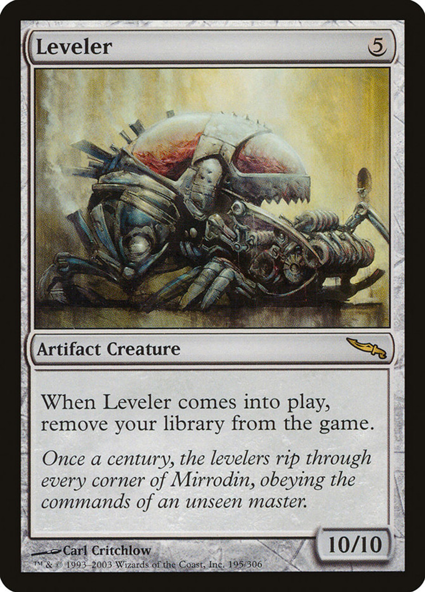

Gameplan - Key Cards, Cool Combos, and Win Conditions
These are cards to lookout for in-game both for yourself as the player and for opponents. Naturally as with any deck, if any of the cards below are countered or removed, it's a step back.
But because this deck is a combo deck, it's a much larger setback because you'll be building from scratch again with a new combo in mind.
Although these are the best cards to try and play, they are also its own greatest weakness because opponents can see the pieces come together and react accordingly.
This card is without a doubt your priorty. The deck has a pretty high mana curve, so casting this ensures you'll be able to cast as many cards as you can.
This will exponentially increase your odds of winning. There are a few cards in the deck that allow you to cheat high-mana costs, but
this card is at the top of your decision-making tree; if this is in your hand, do anything it takes to cast it.
One of the main win conditions is Approach of the Second Sun.
With the perfect setup, you can cast this card, draw seven cards, and cast it a second time all on the same turn.
If not, then you should ideally draw enough cards by the time your next turn comes around.
A big weakness of the deck is that there is no recursion from the graveyard.
Once a card hits the graveyard, there is no way to bring it back.
If you know for sure that one of your cards will hit the graveyard in any way, use this to bring it back.
Choose wisely and anticipate accordingly; holding up 1UUU is a lot of mana.
Psychosis Crawler is a win con on its own where opponents lose life each time you draw a card.
Teferi's Ageless Insight can help speed up that process.


These two cards combo very well together so you can create treasures whenever opponents cast a spell and draw cards.
Put these two cards on your best creature, and they'll be unstoppable.
Ideally, you should put this on a Kwain to knock someone out with commander damage in a single hit.


Make sure you have either Laboratory Maniac or Jace out before putting down Leveler.
Then, you should tap your commander Kwain for the single card draw (or any other card draw) and win the game.

Opponents will try to knock you out of the game through damage; use these to buy yourself a bit more time.

Consecrated Sphinx ensures you draw two cards on each opponents draw step which then creates a creature token.
Eventually, you'll draw enough cards to make use of Alandra's second ability to swing for high damage to opponents.
This deck runs more interaction and board wipes than usual.
Opponents will also be drawing plenty of cards, so these cards will help you buy time to craft the perfect win.
Running efficient removal such as [Swords to Plowshares] is essential, while [Fierce Guardianship] ensures you always have a counterspell ready
(Kwain as your commander is unlikely to be removed). Board wipes like [Farewell] stops anyone from getting way too ahead,
while [Time Stop] acts as your emergency button to prevent an opponent from winning the game before you do; sometimes all it takes is one more turn.